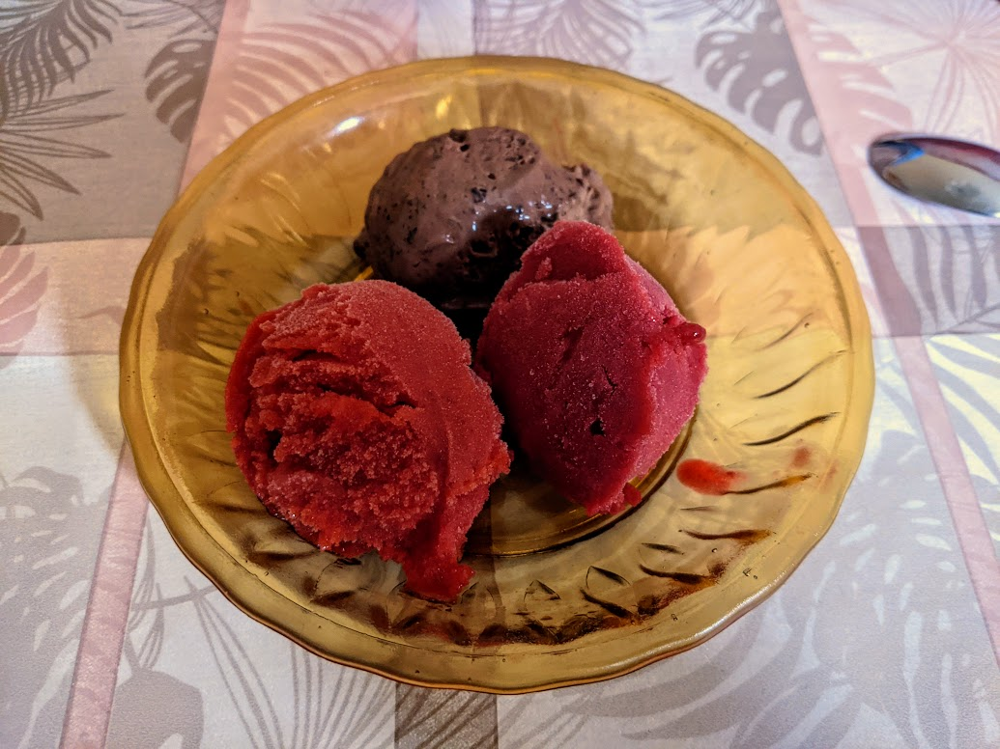

..@..♦.D.

|
Présentation 
|
Blog
|
Recettes
|

Une boule de sorbet à la fraise, une boule de sorbet à la framboise, et une boule de glace au chocolat indécente.
Hors-série
Faire des sorbets artisanaux au goût fabuleux et à la consistance impeccable, c'est beaucoup plus facile qu'il n'y paraît. Il y a trois étapes :
Tout est important.
Le truc à ne pas faire, c'est un sirop de sucre. Ça ne sert à rien, l'eau utilisée dilue le sorbet, et donc on doit utiliser plus de sucre pour compenser. L'utilisation universelle de sirop de sucre dans toutes les recettes trouvables en ligne ou en version papier est une conspiration mondiale. Je ne vois pas d'autre explication.
Niveau goût, c'est souvent une bonne idée d'ajouter le jus d'un demi-citron ou citron vert pour environ un litre de préparation. C'est notamment le cas pour les fruits rouges.